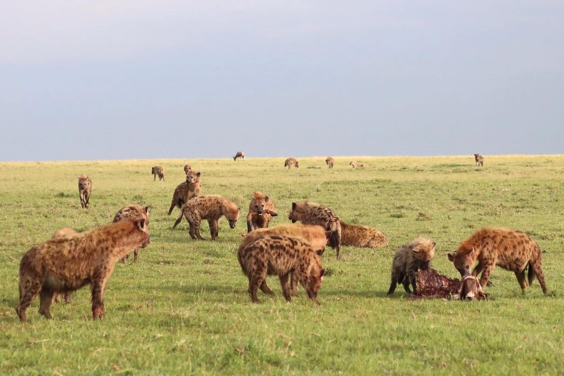

Societies are dynamic
Animal societies are built from the everyday decisions of individuals—cooperate or compete, leave or stay, respond or ignore. We study social decision-making and the dynamics of social structure to understand how societies work and how they impact the ecology and evolution of the animals that live in them. We seek linkages across timescales from moment-to-moment decisions to the rise and fall of generation-spanning dynasties.
Our primary study system is the Mara Hyena Project, a long-term individual-based study of spotted hyenas in the Maasai Mara National Reserve in Kenya. Our work unites the traditional observation-based tools of behavioral ecology with cutting-edge biologging technologies and computer simulations to deliver a process-based understanding of causes and consequences of animal social structure.

Research

Stability and change in animal monarchies
In spotted hyenas and many primates, position in the dominance hierarchy follows predictable rules of social inheritance, much like a monarchy. We interrogate hierarchy dynamics—coups, coalitions, and dynasties—to understand the structure and evolution of these peculiar social systems.

Social decision-making, communication, and movement
Hyenas, like humans and a handful of other animals, flexibly change their social groupings to get the most out of being social. We study how they choose where to go, who to join, and when to call—the everyday behavior that builds social structure and reveals what group living costs and what it provides.

Urbanization and animal societies
Cities are remaking the ecological conditions animals live in far faster than their societies can evolve in response. We track hyena societies across urban gradients to ask which features of social life bend to new conditions, which hold fast, and what it costs animals when their society no longer fits their world.

Social development and social competence
Social skill is a critical and underappreciated part of development. Because young hyenas inherit rank so predictably, we can measure how far an individual ends up from the position it was expected to hold—a rare window into where social skill comes from and what it is worth over a lifetime.